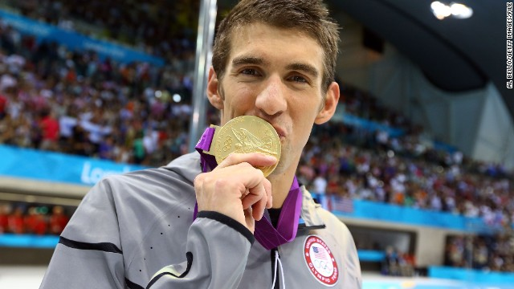

NOTÍCIAS
 Michael Phelps foi eleito o melhor atleta olímpico da história pela revista Sports Illustrated. O nadador, que ganhou seis medalhas na Olimpíada do Rio - cinco delas de ouro -, ganhou o prêmio depois de ver LeBron James faturar o troféu de atleta do ano nos Estados Unidos.
"Ao olhar para minha carreira lá trás, eu quase não acredito. Como dizem, tudo foi alcançado com trabalho duro e dedicação. Eu lemnro quando eu era criança e queria ganhar uma medalha de ouro", disse Phelps, que recebeu o prêmio das mãos do nadador Tom Dolan, da ginasta Aly Raisman e da ex-corredora Jackie Joyner-Kersee.
Atualmente com 31 anos, Pheplps se aposentou após os jogos olímpicos de 2012, em Londres. Na ocasião, o atleta disse que não voltaria às piscinas. Ao longo da carreira, Michael Phelps conquistou 28 medalhas olímpicas, sendo 23 de ouro. Além disso, 13 das medalhas foram alcançadas em provas individuais.
Phelps também foi eleito o melhor nadador do ano de 2016 pela Federação Internacional de Natação (FINA), em cerimônia realizada em Windsor, no Canadá. A vencedora entre as mmulheres foi a húngara Katinka Hosszú, que conquistou três ouros e uma prata nos jogos do Rio.
Se já não bastassem as 28 medalhas olímpicas conquistadas na carreira (sendo 23 de ouro), Michael Phelps receberá mais um prêmio, neste domingo. O nadador americano será agraciado com o BBC “Sports Personality lifetime achievement award".
O prêmio da emissora britânica, distribuído desde 1996, é dado, a cada ano, para “aqueles que impactaram o esporte de maneira expressiva durante suas vidas”.- Estou excitado por receber esse prêmio de tanto prestígio e seguiu os passos dos maiores esportistas. É um jeito incrível de terminar um ano que foi incrível para mim. Estou ansioso essa que deverá ser uma grande noite – disse Phelps.